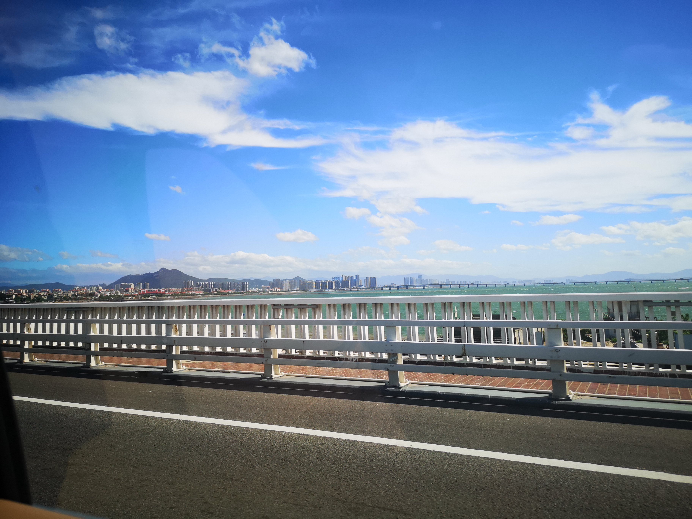

To be honest, I'm not sure where is my real hometow. I was born in Hainan, but have lived in Xiamen for more than 10 years. What's more, my parents are both from Henan and Jilin. I'm mixed-blood exactly. But in my memory, Xiamen took the most part. So I'll introduction Xiamen here.
Xiamen is a beautiful coastal city. Thousads of people visit here every year. There has many different kinds of deliciou seafood, and severl place of interest that worth visiting. The most famous place of Xiamen is Gulang Island without doubt. It has a long history, and is full of excellent stories. Senceary here is so beautiful that vistors cannot reject to take photos here.…
As a colorful city, the commerce and education are still increasing. BRICS summit and Gold Rooster Award were held in Xiamen, which made people in Xiamen very pround.
The beauty of Xiamen can't be described just in words. Hope everyone can have a chance to admire once by yourself.
